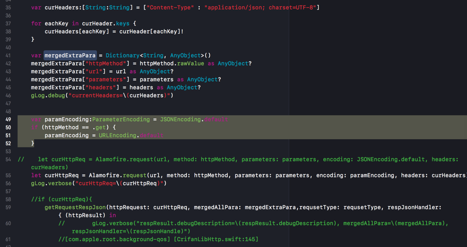
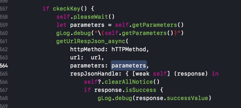
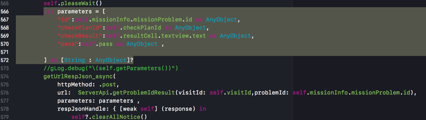
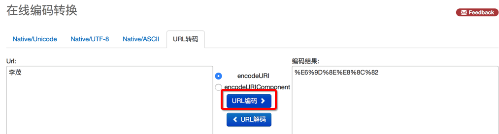
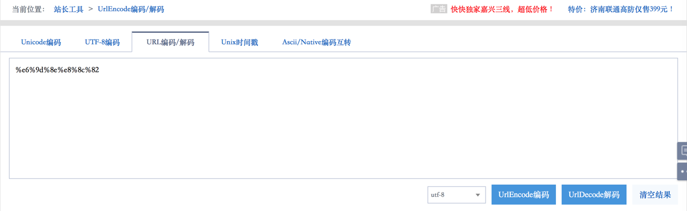
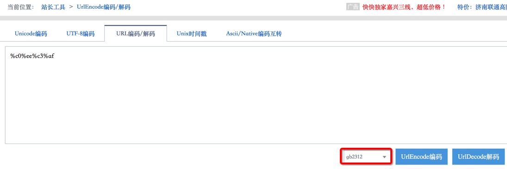
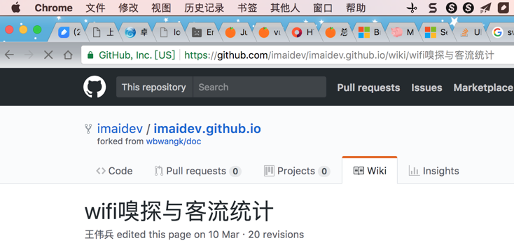
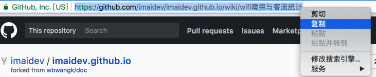
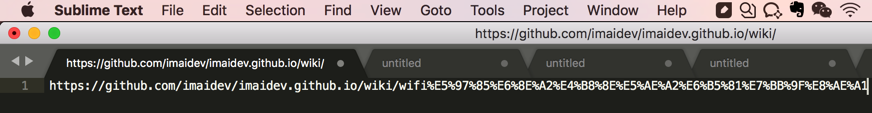

HTTP的请求参数和参数编码
下面介绍HTTP的请求参数Request Parameters和请求参数的编码Request Parameters Encoding
GET的请求的参数：query string
关于Http的GET的请求参数，也有别的叫法：
请求参数=request parameter- =
查询=query - =
查询字符串=query string - =
请求参数=request parameters - =
参数序列化=param serialization=parameter serialization
转换后放到Url中的，是如下形式：
?key1=value1
?key1=value1&key2=value2
典型的是：
GET：参数想要放在url中以?key1=value1&key2=value2的形式
则有两种做法：
- 自己把参数组合成对应的格式，放到url中
- 把参数（字典，对象等）调用url encode函数去编码，生成对应的格式（再放到url中）
GET的一般特点
- GET 请求有长度限制
- 所以query string一般被限制在1024个字节
- 超过限制则后台无法解析参数
- 所以query string一般被限制在1024个字节
- GET 请求可被缓存
- GET 请求保留在浏览器历史记录中
- GET 请求可被收藏为书签
- GET 请求不应在处理敏感数据时使用
- GET 请求只应当用于取回数据
处理查询参数的库
JS的qs
- js中http网络库：axios
- 其中有，处理查询参数的：
qs - 当需要处理get的query string时，就可以利用其中的Qs子库去处理
Qs.stringify(data)- 实现：把（一般是字典类型==JSON类型的）变量，转换，字符串换，序列化，为
&key1=value1之类的形式
- 实现：把（一般是字典类型==JSON类型的）变量，转换，字符串换，序列化，为
- 其中有，处理查询参数的：
关于别名：参数序列化
其中官网demo中：
// `paramsSerializer` is an optional function in charge of serializing `params`
// (e.g. https://www.npmjs.com/package/qs, http://api.jquery.com/jquery.param/)
paramsSerializer: function(params) {
return Qs.stringify(params, {arrayFormat: 'brackets'})
},
也说明了：
此处的stringify=字符串化，也叫做：paramsSerializer=`参数序列化
举例：
某js项目中用到了stringify：
import { stringify } from 'qs';
export async function queryRule(params) {
return request(`/api/rule?${stringify(params)}`);
}
POST的请求的参数：post body
典型的是：把一堆的参数，放到post的body中，格式一般都是json格式
则一般也有两种做法：
- 自己把参数（对象，字典等），转换为对应的json字符串
- 调用库提供的方法去encode你的参数对象为json
其他一些解释：
POST的一般特点
- POST 请求不会被缓存
- POST 请求不会保留在浏览器历史记录中
- POST 不能被收藏为书签
- POST 请求对数据长度没有要求
GET和POST的请求的参数的编码
举例：
http库axios中create时支持的config中的paramsSerializer
就支持利用其他序列化的库，比如：
- Javascript中的：
- qs库
- https://www.npmjs.com/package/qs
- 举例：
Qs.stringify(params, {arrayFormat: 'brackets'})
- qs库
Alamofire中，对于get的参数支持url encoding，对于post支持json encoding
所以代码可以写成：
var paramEncoding:ParameterEncoding = JSONEncoding.default
if (httpMethod == .get) {
paramEncoding = URLEncoding.default
}
let curHttpReq = Alamofire.request(url, method: httpMethod, parameters: parameters, encoding: paramEncoding, headers: curHeaders)

然后从外部调用时，对于get的url参数，可以直接传递：
get中的url的参数的对象，让Alamofire内部去利用URLEncoding转换为对应的?key1=value1&key2=value2的格式：
var parameters = [String : AnyObject]()
parameters = [
"planId":self.visitId as AnyObject,
"name":self.missionInfo.missionInfo.name as AnyObject,
"pics":pics as AnyObject,
"publisher":gCurUserItem.userInfo.pkEmpno as AnyObject,
"resultDescription":self.missionInfo.missionInfo.resultDescription as AnyObject,
"finish":finishInt as AnyObject,
"planProblem":planProblem as AnyObject
]
getUrlRespJson_async(
httpMethod: hTTPMethod,
url: url,
parameters: parameters,
respJsonHandle: { [weak self] (response) in

另外，对应的对于POST来说，把json对象转换为json字符串的例子：
let parameters = [
"id":self.missionInfo.missionProblem.id as AnyObject,
"checkPlanId":self.checkPlanId as AnyObject,
"checkResult":self.resultCell.textview.text as AnyObject,
"pass":self.pass as AnyObject ,
] as [String : AnyObject]?
getUrlRespJson_async(
httpMethod: .post,
url: ServerApi.getProblemIdResult(visitId: self.visitId,problemId: self.missionInfo.missionProblem.id),
parameters: parameters ,
respJsonHandle: { [weak self] (response) in

则内部的Alamofire就会把该参数对象，通过JSONEncoding转换为json字符串了。
举例：
python中，get中url参数可以利用urllib.urlencode（或urllib.quote_plus）去把dict字典转换为key=value的形式：
import urllib
params = urllib.urlencode({'spam': 1, 'eggs': 2, 'bacon': 0})
url = "http://www.musi-cal.com/cgi-bin/query?%s"; % params
关于HTTP参数编码的常见场景和问题
空格应该被encode编码为+还是%20？
如果你接触Python的url的encode比较多，可能会注意到一个现象：
好像空格有时候被编码为+，有时候被编码为%20，到底哪个才对？
Percent Encode也被叫做URL Encode
Percent Encode指的是，一些字符，在被（url）encode后，往往都是变成%xx
比如：
内部对应着HTTP请求时，类型被设置为：application/x-www-form-urlencoded
表格太长，分两个
| ! | # | $ | & | ' | ( | ) | * | + |
|---|---|---|---|---|---|---|---|---|
| %21 | %23 | %24 | %26 | %27 | %28 | %29 | %2A | %2B |
和：
| , | / | : | ; | = | ? | @ | [ | ] |
|---|---|---|---|---|---|---|---|---|
| %2C | %2F | %3A | %3B | %3D | %3F | %40 | %5B | %5D |
而其他常见的字符被编码后的效果是：
| newline | space | " | % | - | . | < | > |
|---|---|---|---|---|---|---|---|
| %0A or %0D or %0D%0A | %20 | %22 | %25 | %2D | %2E | %3C | %3E |
和
| \ | ^ | _ | ` | { | | | } | ~ |
|---|---|---|---|---|---|---|---|
| %5C | %5E | %5F | %60 | %7B | %7C | %7D | %7E |
即：
空格正常情况下被url encode=percent encode，的结果是%20
但是之所以有时候会看到+是因为：
历史上，最早的网页技术中，在表单form被（通过HTTP的GET／POST等请求，或者是邮件发送）提交时，键key和值value，都是被percent encode=url encode的
对应着类型是：application/x-www-form-urlencoded
但是后来有些变种的处理，其中就包括把空格space编码为+（而不是%20）
空格被编码的逻辑的历史
- 空格被url encode=percent encode，应该是：%20
- 而之前历史上有些变种的处理，会编码为：+
而Python中对于url encode相关的函数有3种，对应的效果分别如下：
#!/usr/bin/python
# -*- coding: utf-8 -*-
import urllib
paraValue = "Crifan Li"
queryPara = { "name" : paraValue }
urlEncodedQueryPara = urllib.urlencode(queryPara)
print "urlEncodedQueryPara=%s"%(urlEncodedQueryPara) # urlEncodedQueryPara=name=Crifan+Li
quotedValue = urllib.quote(paraValue) # quotedValue=Crifan%20Li
quotedPlusValue = urllib.quote_plus(paraValue) # quotedPlusValue=Crifan+Li
print "quotedValue=%s,quotedPlusValue=%s"%(quotedValue, quotedPlusValue)
空格被编码
urllib.urlencode编码（字典中的）valueurllib.quote_plus编码字符串：空格编码为+
urllib.quote编码字符串：空格编码为%20
在url地址里包含中文时的编码显示和内部逻辑
背景：
如果url地址中有非普通的ASCII字符串，理论上都是会被编码后，所以你看到的如果url地址中有中文，实际上打开都是%xx之类的地址
中文字符串和其他字符串编码逻辑是一样的。
对于中文类字符被url encode，有很多在线网站可以帮你实现，比如：
http://tool.chinaz.com/tools/urlencode.aspxhttp://tool.oschina.net/encode?type=4
输入中文李茂就可以被（UTF-8）编码为：%e6%9d%8e%e8%8c%82


提示
- 一般网页地址中的字符编码都用的是UTF-8
- 上面编码也都是采用的UTF-8编码得到的结果
而如果想要换成别的编码，比如另一种常见的中文编码GB2312，则编码出来的是另外的结果：

同样字符串的不同编码的效果
- 李茂 -》
UTF-8编码后 -》%e6%9d%8e%e8%8c%82 - 李茂 -》
GB2312编码后 -》%c0%ee%c3%af
为何浏览器中的地址栏中的url地址可以看到有中文，而不是url encode之后的%xx？
而你在浏览器中看到的中文地址其实是浏览器帮你解码后的中文
真正的url地址是%xx形式的被（UTF-8）编码后的地址
比如你在Chrome（或其他浏览器）中看到的地址中有中文：https://github.com/imaidev/imaidev.github.io/wiki/wifi嗅探与客流统计

实际上内部真正的地址是：
-》你可以通过，在地址栏中右键-》复制

再粘贴到别的文本工具中，而得到看到真正的被编码后的地址：

类似的，把该地址去（利用前面说的在线网站帮忙）解码也可以得到同样的中文：